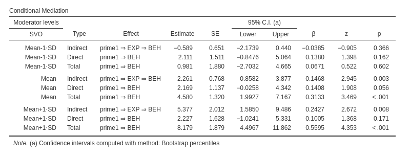
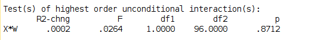
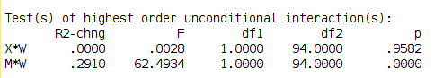
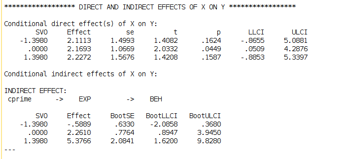

Rosetta store: conditional mediation
(Marcello Gallucci)
keywords jamovi, SPSS, R, PROCESS, mediation
GALMj version ≥ 0.0.4
Introduction
Here you can find comparisons of results obtained in jamovi jAMM, jamovi (jmv), pure R, and SPSS. When not explicitely discussed, the code of different software is written with the aim of obtaing equivalent results across software packages.
Example
This example shows how to estimate a conditional (moderated) mediation model with four variables in jAMM. Data come from Muller, Judd, Yzerbyt, 2005 and contain variables related to a social dilemma experiment. The dataset can be downloaed here
A long version of the analyses in jAMM is presented in jAMM: conditional mediation.
Variables and model
There are four variables:
prime: a two-group experimental conditionEXP: expectations about the other cooperationSVO: continuous measure of social value orientation (higher levels mean more cooperative attitude)BEH: behavior, the amount of experimental tokens given to the public good by the participant.
The model we estimated is:

Thus, * prime: is the independent variable (IV) * EXP: is the mediator (ME) * SVO: is the moderator (MO) * BEH: is the dependent variable (DV)
All continuous predictors are centered to their means.
jAMM
Results are composed by 4 tables. The first table reports the interaction involved in the mediation model, namely, the interaction between the IV and the moderator ( SVO X prime->EXP) in predicting the mediator, and between the mediator and the moderator in predicting the DV ( SVO X EXP->BEH).

The other three tables report the indirect, direct, and total effect of the IV on the DV at three different levels of the moderator. In this example the three levels of the moderator were mean+1 SD,mean,mean-1 SD.

Confidence intervals where estimated with bootstrap percentile method (keep in mind that jAMM bootstrap the full mediation model for each level of the moderator, so the bootstrap can be quite slow).
R and mediation package
First, we estimate the two model needed to obtain the model parameters using lm()
# I happened to have the spss version of the data
library(foreign)
data<-read.spss("../data/muller_mediation.sav",to.data.frame = T)
# set the contrast for dichotomous variable `prime`. Using contr.sum() the variable will be `centered`
# I use the "minus" before the contr.sum() such that the first group in prime is coded -1, like in jAMM.
data$cprime<-factor(data$prime)
contrasts(data$cprime)<--contr.sum(2)
# Mediator model
mod1<-lm(EXP~cprime*SVO,data=data)
summary(mod1)##
## Call:
## lm(formula = EXP ~ cprime * SVO, data = data)
##
## Residuals:
## Min 1Q Median 3Q Max
## -22.9279 -5.5947 0.1731 4.8448 20.1030
##
## Coefficients:
## Estimate Std. Error t value Pr(>|t|)
## (Intercept) -0.0004583 0.7549153 -0.001 0.999517
## cprime1 2.6923752 0.7549153 3.566 0.000566 ***
## SVO -0.0852214 0.5471027 -0.156 0.876543
## cprime1:SVO 0.0889286 0.5471027 0.163 0.871219
## ---
## Signif. codes: 0 '***' 0.001 '**' 0.01 '*' 0.05 '.' 0.1 ' ' 1
##
## Residual standard error: 7.549 on 96 degrees of freedom
## Multiple R-squared: 0.1174, Adjusted R-squared: 0.08985
## F-statistic: 4.258 on 3 and 96 DF, p-value: 0.007201mod2<-lm(BEH~cprime*SVO+EXP*SVO,data=data)
summary(mod2)##
## Call:
## lm(formula = BEH ~ cprime * SVO + EXP * SVO, data = data)
##
## Residuals:
## Min 1Q Median 3Q Max
## -21.146 -8.200 1.764 6.070 24.325
##
## Coefficients:
## Estimate Std. Error t value Pr(>|t|)
## (Intercept) 58.30247 0.99771 58.436 < 2e-16 ***
## cprime1 2.16926 1.06691 2.033 0.044850 *
## SVO 2.56868 0.72554 3.540 0.000624 ***
## EXP 0.83976 0.13874 6.053 2.89e-08 ***
## cprime1:SVO 0.04145 0.78822 0.053 0.958178
## SVO:EXP 0.76472 0.09674 7.905 5.04e-12 ***
## ---
## Signif. codes: 0 '***' 0.001 '**' 0.01 '*' 0.05 '.' 0.1 ' ' 1
##
## Residual standard error: 9.975 on 94 degrees of freedom
## Multiple R-squared: 0.5622, Adjusted R-squared: 0.539
## F-statistic: 24.15 on 5 and 94 DF, p-value: 1.497e-15## average indirect effect
mod1$coefficients[2]*mod2$coefficients[4]## cprime1
## 2.260951We can see that the estimates of the interactions are identical to the ones obtained with jAMM (cf Moderator effects table in jAMM). The standard errors and the z-tests are slightly different because jAMM is based on R lavaan package, that uses the expected information matrix to obtain the standard errors.
As regards the mediated effects, from the models we just estimated we can compute the average mediated effect, because the IV and the MO variables are centered to their means. We can use R package mediation. Confidence intervals are computed with the bootstrap percentile method. Because we have a moderation, we should tell the mediate() command that we want the estimates of mediated effect for SVO equal to its mean. We do that with the covariate option.
library(mediation, quietly = T)##
## Attaching package: 'MASS'## The following object is masked from 'package:Rsearchable':
##
## select## Registered S3 methods overwritten by 'ggplot2':
## method from
## [.quosures rlang
## c.quosures rlang
## print.quosures rlang## mediation: Causal Mediation Analysis
## Version: 4.4.7nsim =1000 # number of bootstrap samples to draw
modValue<-mean(data$SVO)
med<-mediate(mod1,mod2,treat="cprime",mediator = "EXP",covariates=list("SVO"=modValue),sims = nsim,boot = TRUE ,boot.ci.type = "perc")
summary(med)##
## Causal Mediation Analysis
##
## Nonparametric Bootstrap Confidence Intervals with the Percentile Method
##
## (Inference Conditional on the Covariate Values Specified in `covariates')
##
## Estimate 95% CI Lower 95% CI Upper p-value
## ACME 4.5219 1.9464 7.81 0.002 **
## ADE 4.3385 -0.0572 9.12 0.054 .
## Total Effect 8.8604 4.1799 13.75 <2e-16 ***
## Prop. Mediated 0.5103 0.2391 1.01 0.002 **
## ---
## Signif. codes: 0 '***' 0.001 '**' 0.01 '*' 0.05 '.' 0.1 ' ' 1
##
## Sample Size Used: 100
##
##
## Simulations: 1000mediation package calls the indirect (mediated) effect “ACME” and the direct effect “ADE”. We can compare the estimates with the jAMM table Indirect and direct effects computed for SVO=mean. We can see that the mediated effect is not exactly equal to the one estimated by jAMM. It is exctely twice as large. \(4.5219/2=2.2609\). The reason is in the way mediation package treats the categorical variable. Nontheless, it is just a scaling issue, the remaing of the results are perfectly in line.
Then, we can test the mediated effect at different levels of the moderator SVO.
## moderator at 1 SD below the average
modValue<-mean(data$SVO)-sd(data$SVO)
med<-mediate(mod1,mod2,treat="cprime",mediator = "EXP",covariates=list("SVO"=modValue),sims = nsim,boot = TRUE ,boot.ci.type = "perc")
summary(med)##
## Causal Mediation Analysis
##
## Nonparametric Bootstrap Confidence Intervals with the Percentile Method
##
## (Inference Conditional on the Covariate Values Specified in `covariates')
##
## Estimate 95% CI Lower 95% CI Upper p-value
## ACME -1.178 -3.966 0.94 0.30
## ADE 4.223 -1.454 10.04 0.15
## Total Effect 3.045 -2.350 8.64 0.26
## Prop. Mediated -0.387 -4.537 3.26 0.49
##
## Sample Size Used: 100
##
##
## Simulations: 1000## moderator at 1 SD above the average
modValue<-mean(data$SVO)+sd(data$SVO)
med<-mediate(mod1,mod2,treat="cprime",mediator = "EXP",covariates=list("SVO"=modValue),sims = nsim,boot = TRUE ,boot.ci.type = "perc")
summary(med)##
## Causal Mediation Analysis
##
## Nonparametric Bootstrap Confidence Intervals with the Percentile Method
##
## (Inference Conditional on the Covariate Values Specified in `covariates')
##
## Estimate 95% CI Lower 95% CI Upper p-value
## ACME 10.753 2.696 18.81 0.006 **
## ADE 4.454 -1.370 11.00 0.144
## Total Effect 15.208 5.346 24.03 <2e-16 ***
## Prop. Mediated 0.707 0.329 1.15 0.006 **
## ---
## Signif. codes: 0 '***' 0.001 '**' 0.01 '*' 0.05 '.' 0.1 ' ' 1
##
## Sample Size Used: 100
##
##
## Simulations: 1000SPSS PROCESS
To compare jAMM results with PROCESS macro results, we should set up PROCESS to estimate model 59. In PROCESS, this model is in fact the one with the moderator interacting with both the independent variable and the mediator. WE also need to ask for simple mediated effects computed at the mean, one SD plus, and one SD minus the mean (PROCESS 3 default is to condition the effects at selected percentile values of the moderator).
After that, we obtain the following results. First we look at the interaction table produced by PROCESS and compare it with jAMM Moderator effect table.
Interaction in predicting the mediator EXP.  Interactions in predicting the dependent variable BEH.  PROCESS gives the F-test, but we can see that it is equivalent to the (square of) z-test in jAMM, to the second significant digit.
Then we look at the simple mediated effects and direct effects. Also here, we found a very close match. 
Comments?
Got comments, issues or spotted a bug? Please open an issue on GAMLj at github“ or send me an email